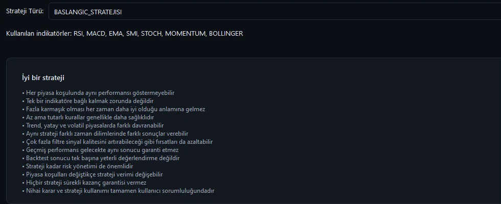

Стратегия
Создание торговых стратегий без кода
Соберите стратегию без программирования: тип стратегии, рыночный режим, фильтры ADX и ATR и индикаторы. Создайте быструю стратегию или отредактируйте существующую.

Реальный экран приложения, снят в виртуальном режиме.
Правила задаёте вы
Готовых сигналов нет; стратегия объединяет результаты выбранных индикаторов в сигнал.
Мастер стратегий
Выберите название, тип и рыночный режим стратегии. Включайте или выключайте фильтры силы тренда (ADX) и волатильности (ATR).
- Балльная система, большинство, квалифицированное большинство, полное согласование
- Рыночный режим: любой, тренд, боковик, волатильный
- Быстрое создание стратегии

Выбор индикаторов по группам
Индикаторы разделены на группы: полосы/каналы, пересечения, скользящие средние и осцилляторы. Правило BUY/SELL каждого индикатора редактируется на экране индикаторов.
- Bollinger, Keltner, EMA, SMA, MACD и другие
- Отдельные правила для каждого индикатора
- Редактирование и удаление стратегий

Признаки хорошей стратегии
В приложении есть подсказки о хорошей стратегии: немного, но последовательных правил, управление риском и отказ полагаться только на бэктест.
- Не ждите одинакового результата на любом рынке
- Слишком много фильтров уменьшает и возможности
- Окончательное решение и ответственность — за вами

Что есть на экране стратегий?
Без кода, правила на виду.
Балльная система
Каждому индикатору присваивается вес; сигнал формируется при превышении порога.
Голосование большинством
Срабатывает, когда большинство индикаторов указывает в одну сторону.
Квалифицированное большинство
Большинство с более высоким порогом; более избирательные сигналы.
Полное согласование
Все индикаторы должны указывать в одну сторону.
Рыночный режим
Стратегия формирует сигналы только в выбранных условиях.
Быстрая стратегия
Быстрое создание, редактирование и удаление.
Частые вопросы
Нужно ли программировать, чтобы создать стратегию?
Нет. Тип стратегии, режим, фильтры и индикаторы выбираются в интерфейсе.
Какой тип стратегии лучше?
Единственно верного нет. Полное согласование даёт меньше, но более избирательных сигналов, большинство — более гибкие. Лучше сравнить их в бэктесте и виртуальном режиме.
Есть ли готовые стратегии?
Sentralyx не продаёт готовые сигналы; правила задаёте вы. Для начала можно отредактировать стратегии в приложении.
Связанные страницы
Проверьте стратегию в виртуальном режиме уже сегодня
Скачайте приложение, соберите стратегию и посмотрите, как она работает, без реальных денег.